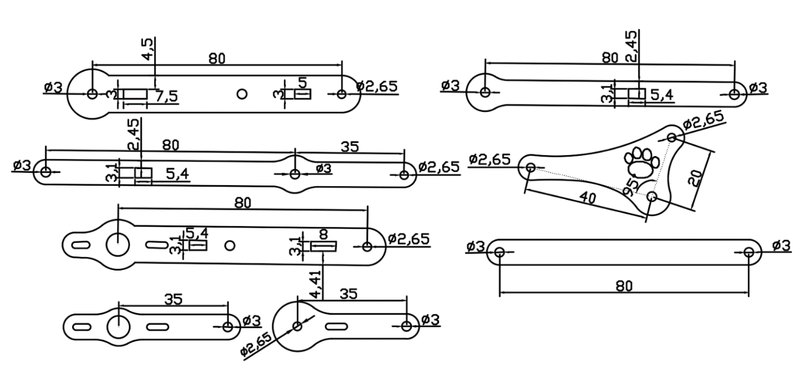

W11 check <<
Previous Next >> Solidworks drawing
HW1
HW1 accounts for 25% of semester grades
HW1 must be completed before 22:00 on November 10, 2021
The HW1 specific project results return area will open on September 23 , 2021 and close at 22:00 on November 10, 2021
Assignment 1: meArm Robot parts drawing and electromechanical motion simulation scene production
Step1 : Download meARM.7z, which contains meArm Robot scenes and assembly manuals for laser cutting parts that have not yet been assembled
meArm_75-0040_v1.pdf is another assembly reference manual.
Step2 : From the Compile CoppeliaSim page of the course webpage , download the official version of coppeliaSim 4.1.0 and the compiled version of MSYS2. 7z (file size 412 MB, uncompressed 1GB) carrying case.
Step3 : In HW1, each student is required to assign random numbers through the program (the actual random number distribution results of the two classes are subject to the results obtained by clicking the button below in the previous lesson). The two sets of parametric CAD software packages used have been carried out since the beginning of software development. Introduction, by obtaining the educational software package file, downloading and installing, configuring and using. Step1 According to the size of the parts, complete the drawing and assembly of the meArm Robot one by one. And after the CoppeliaSim assembly configuration, the imported parts are transferred to the slider in the UI interface to control the rotation of each axis of the meArm Robot.
2b CAD package distribution results: HTTPS : //mde.tw/cad2021/downloads/online/2b_hw1_cad.txt
appendix:
1. CAD kit allocation table:
sw：Solidworks，inv：Inventor，nx：NX12，on：Onshape，slvs：Solvespace
2a Packet random number allocation result
2b Packet random number allocation result
2. After the two sets of CAD complete the part drawings and transfer them to CoppeliaSim, in order to build a dynamic model, the shape editing mode must be converted to a clean model , and combined with the actual transmitted STL format part shape to create a simulation scene (scenes).
3. For the dynamic simulation scene of building meARM robot , please refer to 0 , 1 , 2 , 3 , 4 , 5 , 6 , 7 , and also refer to Uarm robot model and related videos .
4. CoppeliaSim design dynamic simulation description page .
5. Internet Lua program execution.
6. meArm.slvs , meArm_in_solvespace.slvs
7. UI interface program reference:
function closeEventHandler(h)
sim.addLog(sim.verbosity_scriptinfos,'Window'..
h ..' Closing...') simUI.hide(h)
end
function joint1_rotate(ui,id,newVal)
simUI.setLabelText(ui ,3000,'theta1 is set to'..newVal)
sim.setJointTargetPosition(joint1, newVal*deg)
end
function joint2_rotate(ui,id,newVal)
simUI.setLabelText(ui,3000,'theta2 is set to'..newVal)
sim .setJointTargetPosition(joint2, newVal*deg)
end
function joint3_rotate(ui,id,newVal)
simUI.setLabelText(ui,3000,'theta3 is set to'..newVal)
sim.setJointTargetPosition(joint3, newVal*deg)
end
function joint16_rotate( ui,id,newVal)This is a demo of the CustomUI plugin. Browse the tabs below to explore all the widgets that can be created with the plugin.
wordwrap="true" />
<tabs>
<tab title="Numeric">a
<label text="Slider can be horizontal or vertical, and has optional attributes (in XML) that can be set, such as minimum and maximum Value value value." wordwrap="true" />
<label text="" id="3000" wordwrap="true" />
<label text="theta1" /> <hslider tick-position="above" tick- interval="1"
Minimum value="0" Maximum value="360"
minimum="-90" maximum="65" on-change="joint2_rotate" />
<label text="theta3" /> <hslider tick-position="above" tick-interval="1"
minimum="-90 " maximum="185" on-change="joint3_rotate" />
<label text="theta16" /> <hslider tick-position="above" tick-interval="1"
minimum="0" maximum="15" on-change="joint16_rotate" />
</tab>
</tabs>
</ui>
]]
ui=simUI.create(xml)
end

(From: 2016_ADDITIVE MANUFACTURING PROCESSES FOR FABRICATING A MINI ROBOOT-calculation model and experimental results.pdf )
W11 check <<
Previous Next >> Solidworks drawing